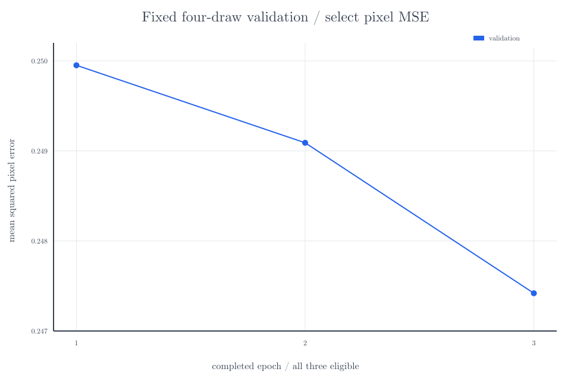
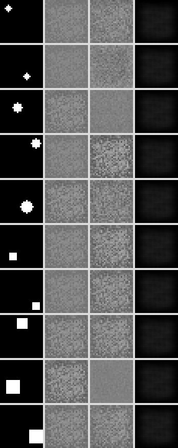
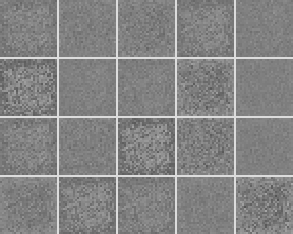

VAE-GAN: Learned Feature Reconstruction and Isolated Updates
Abstract
Image reconstruction needs a measure of similarity, while generation must produce an image from a code alone. Pixel errors can miss useful structure, motivating a learned feature comparison. This report fits a compact VAE-GAN on 294 local circle/square images, retaining three parameter groups, three Adam states and 63 visible isolated updates. Four fixed validation draws select epoch 3 by pixel MSE. Test MC pixel MSE is 0.247712, worse than the fitting-only mean's 0.048548; all unfiltered reconstruction and prior outputs remain visible. Feature-target detachment, separate loss equations, first-phase audit and complete editable C++ distinguish the demonstrated mechanism from an unsupported perceptual-quality claim.
Learn the comparison, keep the update responsibilities explicit
[Larsen et al. (2016)](https://proceedings.mlr.press/v48/larsen16.html) combine a Gaussian encoder, a shared decoder/generator and a discriminator whose intermediate features measure reconstruction. Here E maps 784 pixels through 16 tanh units to four means/log variances. Explicit epsilon samples z=mu+exp(log_variance/2)*epsilon. G maps z through 16 tanh units to 784 sigmoid probabilities. D maps an image through eight tanh features to one real/fake logit. The same G processes independent prior codes, and the same D processes all three image kinds. Only the sampled code reaches G; neither image pixels nor encoder features bypass it.
#include <dm/dm.hpp>
int main() {
std::filesystem::create_directories("build");
dm::graphics::Diagram d(43, 1100);
dm::graphics::DiagramNodeStyle st;
st.width = 4.6;
st.height = 2.7;
st.font_size = 20;
d.node("x", {0, 0}, "Image x\n784 pixels", st)
.node("e", {6, 0}, "Encoder E\ntanh16 / Gaussian4", st)
.node("z", {12, 0}, "Posterior code z\nExplicit epsilon", st)
.node("g", {18, 0}, "Generator G(z)\ntanh16 / sigmoid784", st)
.node("dr", {24, 0}, "D(reconstruction)\nFeature8 / real logit", st)
.node("p", {12, 6}, "Independent prior code\nExplicit N(0,I) draw", st)
.node("gp", {18, 6}, "SAME generator G\nPrior probabilities", st)
.node("dp", {24, 6}, "SAME D(prior image)\nFeature8 / real logit", st)
.node("dx", {6, -6}, "SAME D(real x)\nLive real features", st)
.node("f", {18, -6}, "Feature residual F\nDetach real TARGET", st)
.edge("x", "e")
.edge("e", "z")
.edge("z", "g")
.edge("g", "dr")
.edge("p", "gp")
.edge("gp", "dp")
.edge("x", "dx")
.edge("dx", "f")
.edge("dr", "f")
.text(
{12, -11},
"D then E then G: recompute the forward before each isolated Adam step.\nD stays fixed "
"during E/G updates; its input Jacobian remains live.",
20)
.save_svg("build/vae_gan_method.svg");
}
Let f and a denote D's feature vector and logit, and let sp be softplus. Define
Feature coordinates are summed, and the unit-covariance Gaussian constant is omitted. Each logistic branch averages its own rows, so the native API allows a different prior batch size. The report uses matching source batch sizes. These are *three selected objectives*, not a single pixel-space ELBO. Updating D with the feature loss could collapse its metric; updating E with the adversarial term would change the specified experiment. The full graph retains available paths; the caller passes only the intended group's leaves to its optimizer.
This dense teaching variant uses unit feature weight, half-weighted fake branches and a non-saturating generator loss. It does not reproduce the paper's convolutional architecture, minimax generator recipe or RMSProp training. Fixed-width forward work is linear in the number of image/prior rows; dense layers cost O((B+P)[F(H+D)+LH]) for pixel width F, Gaussian width L, hidden width H and discriminator width D. Activations scale linearly in B+P.
A loss example small enough to check by hand
Three real features equal to one and reconstructed features equal to zero give F=1.5, with reconstructed-feature derivatives all -1 and no real-target derivative. For a fully zeroed small network, sigmoid pixels are 0.5, KL and feature residual are zero, generator loss is log 2 and discriminator loss is 2 log 2. The three-pixel diagnostic NLL is 3 log 2.
#include <dm/dm.hpp>
int main() {
namespace n = dm::nn;
namespace m = n::models;
const auto t = n::DType::Float64;
auto real = n::ones({1, 3}, t).requires_grad_(), rec = n::zeros({1, 3}, t).requires_grad_();
const auto distance = m::VaeGanFeatureNll(real, rec);
auto gradient = n::grad(n::sum(distance), {real, rec}, {.allow_unused = true});
if (distance.item() != 1.5 || gradient[0].defined() ||
gradient[1].to_vector<double>() != std::vector<double>(3, -1))
return 1;
n::ParameterStore e(3301, t), g(3307, t), d(3313, t);
auto x = n::zeros({2, 3}, t), epsilon = n::zeros({2, 2}, t), prior = n::zeros({3, 2}, t);
m::VaeGan(e, g, d, x, epsilon, prior, 3, 2, 2, 2);
for (auto* p : {&e, &g, &d})
p->unflatten(std::vector<double>(p->count(), 0));
const auto o = m::VaeGan(e, g, d, x, epsilon, prior, 3, 2, 2, 2);
if (o.encoder_loss.item() != 0 || std::abs(o.generator_loss.item() - std::log(2.)) > 1e-14 ||
std::abs(o.discriminator_loss.item() - 2 * std::log(2.)) > 1e-14)
return 1;
std::print(
"Feature distance {:.1f}; reconstructed derivatives [-1,-1,-1]; real-target derivative "
"absent.\n",
distance.item());
auto chart = dm::graphics::RPlot::create();
chart
.bars(
{0, 1, 2, 3},
{o.encoder_loss.item(),
o.generator_loss.item(),
o.discriminator_loss.item(),
o.pixel_nll.to_vector<double>()[0]},
"",
dm::RGBA{37, 99, 235},
.6)
.x_ticks({0, 1, 2, 3}, {"E loss", "G loss", "D loss", "pixel NLL"})
.title("Zero model / pixel NLL is diagnostic")
.x_label("separate objectives and one diagnostic")
.y_label("scalar value / nats")
.save_svg("build/vae_gan_algebra.svg");
g.set("output/b", n::full({3}, 1000, t));
const auto saturated = m::VaeGan(e, g, d, x, epsilon, prior, 3, 2, 2, 2);
if (saturated.encoder_loss.item() != o.encoder_loss.item() ||
saturated.generator_loss.item() != o.generator_loss.item() ||
saturated.discriminator_loss.item() != o.discriminator_loss.item())
return 1;
std::print(
"With zero D fixed, saturated G changes diagnostic pixel NLL from {:.9f} to {:.9f}, while "
"all three fitted objectives stay unchanged.\n",
o.pixel_nll.to_vector<double>()[0],
saturated.pixel_nll.to_vector<double>()[0]);
}Feature distance 1.5; reconstructed derivatives [-1,-1,-1]; real-target derivative absent. With zero D fixed, saturated G changes diagnostic pixel NLL from 2.079441542 to 41.406956968, while all three fitted objectives stay unchanged.

Pixel NLL clips sigmoid probabilities to the original Float32-represented endpoints 1e-6 and 1-1e-6, even when a caller chooses Float64 computation. It remains a diagnostic: neither pixel NLL nor pixel MSE appears in any fitted objective. Learned feature error also depends on the current D, so its magnitude alone does not establish perceptual similarity.
Native local data and the complete fitting program
Offline native beta-vae-assets preparation enumerates 2 shapes×3 sizes×7 x×7 y=294 binary 28×28 images. Radius is size+2 and centre is (3x+5,3y+5). Circles use inclusive Euclidean radius; squares use inclusive Chebyshev radius. Residue (x+2y+size+3shape) mod 7 assigns test=0, validation=1 and fit=2–6, giving 210/42/42 disjoint factor combinations. These are small structured teaching data. Factor labels never enter the networks or checkpoint criterion.
#include <dm/dm.hpp>
int main() {
namespace n = dm::nn;
const auto cache = dm::datasets::prepare_example_data("beta-vae-assets");
const auto a = n::load_npz((std::filesystem::path(cache) / "beta_vae/factors.npz").string());
auto find = [&](const std::string& name) {
for (const auto& [key, value] : a)
if (key == name)
return value;
throw std::runtime_error(name);
};
std::print("| pool | images | image geometry | factor columns |\n|---|---:|---|---:|\n");
for (const std::string split : {"fit", "validation", "test"}) {
const auto x = find(split + "_images"), f = find(split + "_factors");
std::print("| {} | {} | 28x28x1 | {} |\n", split, x.size(0), f.size(1));
}
}| pool | images | image geometry | factor columns |
|---|---|---|---|
| fit | 210 | 28x28x1 | 4 |
| validation | 42 | 28x28x1 | 4 |
| test | 42 | 28x28x1 | 4 |
Seeds E=3301, G=3307 and D=3313 create 6+4+4 leaves and 12,696+13,408+6,289=32,393 scalars. BatchOrder(210,32,3373) gives seven minibatches per epoch, including an 18-image final batch. Three epochs therefore perform 21 D, 21 E and 21 G steps: *63 optimizer updates*. Each group has its own Adam state, rate 0.003, moments 0.9/0.999 and epsilon 1e-8. D updates first, then E is recomputed with current D, then G is recomputed with current D and E. Group isolation uses selected leaves; it does not detach the discriminator's input Jacobian.
The fixed four-draw posterior banks use seeds 3323/3329/3335 and independent prior banks 3347/3353/3359 for fit/validation/test. Prior-only generation uses 3371. Fresh epoch posterior banks use 3390–3392; fresh prior banks use 3408–3410. Float64 MT19937/Box–Muller banks and their Float32 casts are both retained. All eligible completed epochs 1–3 are scored on fixed four-draw validation *pixel MSE*, avoiding selection by a changing discriminator metric. The selected checkpoint restores all three groups into a fresh model. It is model-only restore, not an optimizer-resume checkpoint. The adapters below only package outputs and checkpoints; the actual forward, objective selection, differentiation and Adam step are visible in the loop.
#include <dm/dm.hpp>
namespace nn = dm::nn;
namespace ae {
void Require(bool ok, const std::string& why) {
if (!ok)
throw std::runtime_error(why);
}
void Near(double a, double b, double tolerance, const std::string& why) {
Require(std::abs(a - b) <= tolerance, why);
}
struct BetaFactorData {
nn::Tensor images, factors, source;
};
struct VaeNoiseBank {
nn::Tensor standard, epsilon;
};
nn::Tensor Flatten(const nn::Tensor& x) {
return x.reshape({x.size(0), 784});
}
nn::Tensor Find(const nn::NamedTensors& arrays, const std::string& name) {
for (const auto& [key, value] : arrays)
if (key == name)
return value;
throw std::runtime_error("Missing array:" + name);
}
std::string Bytes(const nn::Tensor& x) {
const auto v = x.contiguous().to_vector<float>();
return std::string(reinterpret_cast<const char*>(v.data()), v.size() * sizeof(float));
}
bool SameBytes(const nn::Tensor& a, const nn::Tensor& b) {
return nn::equal_bits(a, b);
}
double MaxAbsDiff(const nn::Tensor& a, const nn::Tensor& b, int count) {
return nn::max(nn::abs(nn::slice_axis(Flatten(a), 0, 0, 1) - nn::slice_axis(Flatten(b), 0, 0, 1)))
.item();
}
nn::Tensor PixelMean(const nn::Tensor& x) {
return nn::cast(nn::mean(nn::cast(Flatten(x), nn::DType::Float64), {0}), nn::DType::Float32);
}
nn::Tensor Constant(const nn::Tensor& row, int count) {
return nn::broadcast_to(row.reshape({1, 784}), {count, 784}).contiguous();
}
double Mse(const nn::Tensor& a, const nn::Tensor& b) {
return nn::mean(
nn::square(
nn::cast(Flatten(a), nn::DType::Float64) -
nn::cast(Flatten(b), nn::DType::Float64)))
.item();
}
std::vector<BetaFactorData> LoadBetaFactors(const std::filesystem::path& root) {
const auto arrays = nn::load_npz((root / "factors.npz").string());
const auto canonical = nn::models::KnownFactorLattice();
std::vector<BetaFactorData> result;
std::set<int> seen;
for (const std::string split : {"fit", "validation", "test"}) {
const int count = split == "fit" ? 210 : 42;
const auto raw = Find(arrays, split + "_images"), factors = Find(arrays, split + "_factors"),
source = Find(arrays, split + "_source_ids");
Require(
raw.shape() == nn::Shape{count, 28, 28, 1} && factors.dtype() == nn::DType::Int32 &&
factors.shape() == nn::Shape{count, 4} && source.dtype() == nn::DType::Int32 &&
source.shape() == nn::Shape{count},
"complete factor-pool schema");
const auto known = Find(canonical, split + "_source_ids").to_vector<int>();
std::vector<std::int64_t> rows;
for (int id : source.to_vector<int>()) {
auto where = std::find(known.begin(), known.end(), id);
Require(
where != known.end() && seen.insert(id).second,
"unique source ID in correct compositional split");
rows.push_back(where - known.begin());
}
const auto pixels = nn::take_rows(Find(canonical, split + "_images"), rows);
Require(
nn::equal_bits(factors, nn::take_rows(Find(canonical, split + "_factors"), rows)),
"all original factor coordinates");
Require(
nn::equal_bits(nn::cast(raw, nn::DType::Float32), pixels),
"all294x784 pixels match the canonical lattice");
result.push_back({pixels, factors, source});
}
Require(seen.size() == 294, "exhaustive lattice");
return result;
}
void SaveFactorData(const std::filesystem::path& root, const std::vector<BetaFactorData>& pools) {
nn::NamedTensors arrays;
for (int k = 0; k < 3; ++k) {
const std::string s = k == 0 ? "fit" : k == 1 ? "validation" : "test";
arrays.emplace_back(s + "_images", pools[k].images);
arrays.emplace_back(s + "_factors", pools[k].factors);
arrays.emplace_back(s + "_source_ids", pools[k].source);
}
nn::save_npz((root / "data.npz").string(), arrays);
}
VaeNoiseBank BetaVaeNoise(std::int64_t count, std::int64_t draws, std::uint32_t seed) {
auto standard = nn::models::GaussianNoise({count, 4}, draws, seed);
return {standard, nn::cast(standard, nn::DType::Float32)};
}
nn::Tensor BetaVaeNoiseAt(const VaeNoiseBank& bank, std::int64_t k) {
return nn::select(bank.epsilon, 0, k).contiguous();
}
using nn::models::VaeGan;
using nn::models::VaeGanDecode;
using nn::models::VaeGanOutput;
class VaeGanModel {
public:
nn::ParameterStore encoder{3301}, generator{3307}, discriminator{3313};
VaeGanModel() {
{
nn::NoGradGuard guard;
VaeGan(
encoder,
generator,
discriminator,
nn::zeros({1, 784}),
nn::zeros({1, 4}),
nn::zeros({1, 4}));
}
}
std::vector<nn::ParameterStore*> Groups() { return {&encoder, &generator, &discriminator}; }
std::int64_t Count() { return encoder.count() + generator.count() + discriminator.count(); }
std::size_t Tensors() { return encoder.size() + generator.size() + discriminator.size(); }
VaeGanOutput Forward(const nn::Tensor& x, const nn::Tensor& e, const nn::Tensor& p) {
return VaeGan(encoder, generator, discriminator, Flatten(x), e, p);
}
static nn::Tensor Objective(const VaeGanOutput& o, int group) {
return group == 0 ? o.encoder_loss : group == 1 ? o.generator_loss : o.discriminator_loss;
}
/// Named fields of tflow's Evaluate, all checked finite.
nn::NamedTensors Evaluate(const nn::Tensor& x, const nn::Tensor& e, const nn::Tensor& p) {
nn::NoGradGuard guard;
auto o = Forward(x, e, p);
nn::NamedTensors out{
{"mu", o.mu},
{"log_variance", o.log_variance},
{"z", o.z},
{"probability", o.probability},
{"prior_probability", o.prior_probability},
{"real_feature", o.real_feature},
{"reconstruction_feature", o.reconstruction_feature},
{"prior_feature", o.prior_feature},
{"real_logit", o.real_logit},
{"reconstruction_logit", o.reconstruction_logit},
{"prior_logit", o.prior_logit},
{"feature_nll", o.feature_nll},
{"kl", o.kl},
{"pixel_nll", o.pixel_nll},
{"mse", o.mse},
{"encoder_loss", o.encoder_loss},
{"generator_loss", o.generator_loss},
{"discriminator_loss", o.discriminator_loss},
{"generator_adversarial", o.generator_adversarial}};
for (auto& [name, t] : out) {
t = t.contiguous();
for (float v : t.to_vector<float>())
Require(std::isfinite(v), "all VAE-GAN fields finite");
}
return out;
}
/// Isolated group gradient named "<group>/<name>".
nn::NamedTensors
Gradient(int group, const nn::Tensor& x, const nn::Tensor& e, const nn::Tensor& p) {
auto* store = Groups()[group];
auto g = nn::grad(Objective(Forward(x, e, p), group), store->parameters());
nn::NamedTensors out;
for (std::size_t i = 0; i < g.size(); ++i)
out.emplace_back(std::to_string(group) + "/" + store->names()[i], g[i]);
return out;
}
/// All arrays named "<k>/<name>" (k = 0 encoder, 1 generator, 2 discriminator).
nn::NamedTensors Arrays() {
nn::NamedTensors out;
auto stores = Groups();
for (int k = 0; k < 3; ++k)
for (const auto& name : stores[k]->names())
out.emplace_back(std::to_string(k) + "/" + name, stores[k]->at(name).detach().clone());
return out;
}
std::vector<std::string> Snapshot() {
std::vector<std::string> out;
for (const auto& [key, value] : Arrays())
out.push_back(Bytes(value));
return out;
}
/// Loads "<k>/<name>" arrays (tflow's initial_arrays.npz / our best.npz).
void Load(const nn::NamedTensors& arrays) {
Require(arrays.size() == Tensors(), "all VAE-GAN tensors supplied");
auto stores = Groups();
for (int k = 0; k < 3; ++k)
for (const auto& name : stores[k]->names()) {
auto value = Find(arrays, std::to_string(k) + "/" + name);
Require(value.shape() == stores[k]->at(name).shape(), "matching VAE-GAN shapes");
stores[k]->set(name, value.contiguous().clone());
}
}
/// Code-only generation.
nn::Tensor Decode(const nn::Tensor& z) {
nn::NoGradGuard guard;
return VaeGanDecode(generator, z).contiguous();
}
};
std::vector<double> VaeGanScore(
VaeGanModel& model,
const nn::Tensor& images,
const VaeNoiseBank& noise,
const VaeNoiseBank& prior) {
std::vector<double> total(4);
for (int draw = 0; draw < 4; ++draw) {
const auto fields =
model.Evaluate(images, BetaVaeNoiseAt(noise, draw), BetaVaeNoiseAt(prior, draw));
int index = 0;
for (const std::string key : {"mse", "pixel_nll", "feature_nll", "kl"})
total[index++] += nn::sum(nn::cast(Find(fields, key), nn::DType::Float64)).item();
}
for (auto& value : total)
value /= double(4 * images.size(0));
return total;
}
} // namespace ae
namespace check {
using ae::Near;
using ae::Require;
} // namespace check
namespace {
namespace nn = datamunge::nn;
void Run(
const std::filesystem::path& data,
const std::filesystem::path& root,
int epochs,
const std::string& init) {
auto pools = ae::LoadBetaFactors(data);
std::filesystem::create_directories(root);
ae::SaveFactorData(root, pools);
std::vector<ae::VaeNoiseBank> noise, priors;
for (int k = 0; k < 3; ++k) {
noise.push_back(ae::BetaVaeNoise(pools[k].images.size(0), 4, 3323 + k * 6));
priors.push_back(ae::BetaVaeNoise(pools[k].images.size(0), 4, 3347 + k * 6));
}
nn::NamedTensors banks;
for (int k = 0; k < 3; ++k) {
const std::string split = k == 0 ? "fit" : k == 1 ? "validation" : "test";
banks.emplace_back(split + "_epsilon", noise[k].epsilon);
banks.emplace_back(split + "_standard", noise[k].standard);
banks.emplace_back(split + "_prior_epsilon", priors[k].epsilon);
banks.emplace_back(split + "_prior_standard", priors[k].standard);
}
auto prior_noise = ae::BetaVaeNoise(20, 1, 3371);
banks.emplace_back("generation_standard", prior_noise.standard);
banks.emplace_back("generation_epsilon", prior_noise.epsilon);
nn::save_npz((root / "fixed_noise.npz").string(), banks);
ae::VaeGanModel model;
nn::OptimizerConfig config;
config.kind = nn::OptimizerKind::Adam;
std::vector<std::unique_ptr<nn::Optimizer>> optimizers;
for (auto* group : model.Groups())
optimizers.push_back(std::make_unique<nn::Optimizer>(*group, .003, config));
if (!init.empty())
model.Load(nn::load_npz(init));
const std::int64_t parameters = model.Count();
const std::size_t tensors = model.Tensors();
check::Require(parameters == 32393 && tensors == 14, "compact VAE-GAN census");
nn::save_npz((root / "initial_arrays.npz").string(), model.Arrays());
nn::BatchOrder order(210, 32, 3373);
std::ofstream history(root / "history.tsv"), batches(root / "batches.tsv");
history.precision(17);
history
<< "epoch\tvalidation_mc_mse\tvalidation_pixel_nll\tvalidation_feature_nll\tvalidation_kl\n";
batches << "epoch\tstep\trow\tsource_id\n";
const auto fit_source = pools[0].source.to_vector<int>();
const auto best_path = (root / "best.npz").string();
double best = std::numeric_limits<double>::infinity();
int selected = 0, steps = 0;
const auto started = std::chrono::steady_clock::now();
for (int epoch = 1; epoch <= epochs; ++epoch) {
auto train = ae::BetaVaeNoise(210, 1, 3389 + epoch),
prior = ae::BetaVaeNoise(210, 1, 3407 + epoch);
nn::save_npz(
(root / ("train_noise_epoch" + std::to_string(epoch) + ".npz")).string(),
{{"standard", train.standard},
{"epsilon", train.epsilon},
{"prior_standard", prior.standard},
{"prior_epsilon", prior.epsilon}});
auto e = ae::BetaVaeNoiseAt(train, 0), p = ae::BetaVaeNoiseAt(prior, 0);
order.begin_epoch();
int seen = 0;
for (;;) {
auto rows = order.next();
if (rows.empty())
break;
auto x = nn::take_rows(pools[0].images, rows), epsilon = nn::take_rows(e, rows),
z = nn::take_rows(p, rows);
if (!steps) {
nn::save_npz(
(root / "first_batch.npz").string(),
{{"images", x}, {"epsilon", epsilon}, {"prior", z}});
nn::save_npz((root / "first_forward.npz").string(), model.Evaluate(x, epsilon, z));
for (int group = 0; group < 3; ++group)
nn::save_npz(
(root / ("initial_gradients_group" + std::to_string(group) + ".npz")).string(),
model.Gradient(group, x, epsilon, z));
}
for (int group : {2, 0, 1}) {
const auto before = steps ? nn::NamedTensors{} : model.Arrays();
if (!steps)
nn::save_npz(
(root / ("first_actual_gradients_group" + std::to_string(group) + ".npz")).string(),
model.Gradient(group, x, epsilon, z));
// Recompute from CURRENT D/E/G weights before EACH isolated update.
const auto forward = nn::models::VaeGan(
model.encoder, model.generator, model.discriminator, ae::Flatten(x), epsilon, z);
const auto objective = group == 0 ? forward.encoder_loss
: group == 1 ? forward.generator_loss
: forward.discriminator_loss;
const double loss = objective.item<float>();
const auto gradients = nn::grad(objective, model.Groups()[group]->parameters());
for (const auto& gradient : gradients)
for (double value : gradient.to_vector<double>())
ae::Require(std::isfinite(value), "finite phase derivative");
optimizers[group]->step(gradients);
check::Require(
std::isfinite(loss) && loss >= 0, "all three nonnegative finite training objectives");
if (!steps) {
auto after = model.Arrays();
bool changed = false;
for (const auto& [key, value] : before) {
const bool same = nn::equal_bits(value, ae::Find(after, key));
if (key[0] - '0' == group)
changed |= !same;
else
check::Require(same, "isolated update changes ONLY intended variable group");
}
check::Require(changed, "intended group actually updates");
nn::save_npz(
(root / ("first_after_group" + std::to_string(group) + ".npz")).string(), after);
}
}
for (auto row : rows)
batches << epoch << '\t' << steps << '\t' << row << '\t' << fit_source[row] << '\n';
++steps;
seen += int(rows.size());
}
check::Require(seen == 210, "all fit cases once per epoch");
auto score = ae::VaeGanScore(model, pools[1].images, noise[1], priors[1]);
history << epoch;
for (auto v : score)
history << '\t' << v;
history << '\n';
nn::save_npz(
(root / ("epoch" + std::to_string(epoch) + "_arrays.npz")).string(), model.Arrays());
if (score[0] < best) {
best = score[0];
selected = epoch;
nn::save_npz(best_path, model.Arrays()); // validation MC pixel MSE selects all THREE groups
}
}
const double seconds =
std::chrono::duration<double>(std::chrono::steady_clock::now() - started).count();
ae::VaeGanModel deployed;
deployed.Load(nn::load_npz(best_path)); // fresh all-group model-only restore
check::Near(
ae::VaeGanScore(deployed, pools[1].images, noise[1], priors[1])[0],
best,
1e-9,
"restored selection score");
const auto before = deployed.Snapshot();
nn::NamedTensors outputs;
for (int k = 0; k < 3; ++k) {
const std::string split = k == 0 ? "fit" : k == 1 ? "validation" : "test";
const std::int64_t n = pools[k].images.size(0);
auto mean =
deployed.Evaluate(pools[k].images, nn::zeros({n, 4}), ae::BetaVaeNoiseAt(priors[k], 0));
check::Require(
ae::SameBytes(ae::Find(mean, "mu"), ae::Find(mean, "z")),
"zero epsilon gives posterior mu");
for (const auto& [key, v] : mean)
outputs.emplace_back(split + "_zero_" + key, v);
for (int draw = 0; draw < 4; ++draw) {
auto f = deployed.Evaluate(
pools[k].images, ae::BetaVaeNoiseAt(noise[k], draw), ae::BetaVaeNoiseAt(priors[k], draw));
for (const auto& [key, v] : f)
outputs.emplace_back(split + "_draw" + std::to_string(draw) + "_" + key, v);
}
}
auto e = ae::BetaVaeNoiseAt(noise[2], 0), p = ae::BetaVaeNoiseAt(priors[2], 0);
auto test = deployed.Evaluate(pools[2].images, e, p),
repeat = deployed.Evaluate(pools[2].images, e, p),
other = deployed.Evaluate(pools[2].images, ae::BetaVaeNoiseAt(noise[2], 1), p);
check::Require(
ae::SameBytes(ae::Find(test, "probability"), ae::Find(repeat, "probability")) &&
ae::SameBytes(ae::Find(test, "probability"), deployed.Decode(ae::Find(test, "z"))),
"repeat and code-only decode BITEXACT");
check::Require(
!ae::SameBytes(ae::Find(test, "z"), ae::Find(other, "z")) &&
!ae::SameBytes(ae::Find(test, "probability"), ae::Find(other, "probability")) &&
ae::SameBytes(ae::Find(test, "mu"), ae::Find(other, "mu")),
"noise affects latent/probability,not encoder heads");
auto single = deployed.Evaluate(
nn::take_rows(pools[2].images, {0}), nn::take_rows(e, {0}), nn::take_rows(p, {0}));
const double parity =
ae::MaxAbsDiff(ae::Find(single, "probability"), ae::Find(test, "probability"), 784);
check::Require(parity < 2e-6, "single/batch parity");
auto prior_z = ae::BetaVaeNoiseAt(prior_noise, 0), prior = deployed.Decode(prior_z);
nn::save_npz((root / "prior.npz").string(), {{"z", prior_z}, {"probability", prior}});
check::Require(before == deployed.Snapshot(), "all inference leaves THREE groups unchanged");
nn::save_npz((root / "model_arrays.npz").string(), deployed.Arrays());
nn::save_npz((root / "outputs.npz").string(), outputs);
auto score = ae::VaeGanScore(deployed, pools[2].images, noise[2], priors[2]);
auto mean = ae::Constant(ae::PixelMean(pools[0].images), 42);
const double mse = ae::Mse(ae::Find(outputs, "test_zero_probability"), pools[2].images),
baseline = ae::Mse(mean, pools[2].images);
std::ofstream meta(root / "metrics.json");
meta.precision(17);
meta << "{\"parameters\":" << parameters << ",\"tensors\":" << tensors << ",\"epochs\":" << epochs
<< ",\"steps_per_group\":" << steps << ",\"total_optimizer_updates\":" << 3 * steps
<< ",\"selected_epoch\":" << selected << ",\"mc_samples\":4,\"test_mc_mse\":" << score[0]
<< ",\"test_diagnostic_pixel_nll\":" << score[1] << ",\"test_feature_nll\":" << score[2]
<< ",\"test_kl\":" << score[3] << ",\"decode_mu_mse\":" << mse
<< ",\"fit_mean_mse\":" << baseline << ",\"single_batch_max_error\":" << parity
<< ",\"training_seconds\":" << seconds << "}\n";
check::Require(bool(meta) && bool(history) && bool(batches), "complete VAE-GAN evidence");
std::print(
"| selected epoch | test MC pixel MSE | diagnostic pixel NLL | feature residual | KL | "
"decode(mu) MSE | fitting mean MSE |\n|---:|---:|---:|---:|---:|---:|---:|\n| {} | {:.9f} | "
"{:.9f} | {:.9f} | {:.9f} | {:.9f} | {:.9f} |\n",
selected,
score[0],
score[1],
score[2],
score[3],
mse,
baseline);
}
} // namespace
int main() {
try {
const auto cache = dm::datasets::prepare_example_data("beta-vae-assets");
Run(std::filesystem::path(cache) / "beta_vae", "build/vae_gan", 3, "");
return 0;
} catch (const std::exception& e) {
std::cerr << e.what() << '\n';
return 1;
}
}| selected epoch | test MC pixel MSE | diagnostic pixel NLL | feature residual | KL | decode(mu) MSE | fitting mean MSE |
|---|---|---|---|---|---|---|
| 3 | 0.247712397 | 539.843249730 | 5.041923702 | 0.471085257 | 0.245177199 | 0.048548290 |
All 24 parameter/noise/forward archives and complete histories match the source bit for bit. The two summary MSEs use tensor Float64 pixel reductions instead of the source's host sum; the observed differences are below 1.1e-14. Every other non-timing JSON value remains exact.
Selection and the first three isolated updates
Only validation pixel MSE selects the checkpoint. No test value is consulted during fitting. Feature-loss values at different epochs also reflect changes in D; they are not measurements under a fixed perceptual metric.
#include <dm/dm.hpp>
int main() {
std::ifstream input("build/vae_gan/history.tsv");
std::string header;
std::getline(input, header);
std::vector<double> epochs, mse;
double e, m, p, f, k;
while (input >> e >> m >> p >> f >> k) {
epochs.push_back(e);
mse.push_back(m);
}
if (epochs.size() != 3)
return 1;
auto chart = dm::graphics::RPlot::create();
chart.lines(epochs, mse, "validation", dm::RGBA{37, 99, 235}, 2)
.points(epochs, mse, "", dm::RGBA{37, 99, 235}, 5)
.title("Fixed four-draw validation / select pixel MSE")
.x_label("completed epoch / all three eligible")
.y_label("mean squared pixel error")
.y_limits(.247,.2502)
.y_ticks({.247,.248,.249,.250},{"0.247","0.248","0.249","0.250"})
.x_ticks({1, 2, 3}, {"1", "2", "3"})
.save_svg("build/vae_gan_validation.svg");
}
#include <dm/dm.hpp>
int main() {
namespace n = dm::nn;
auto before = n::load_npz("build/vae_gan/initial_arrays.npz");
auto find = [](const n::NamedTensors& a, const std::string& name) {
for (const auto& [key, value] : a)
if (key == name)
return value;
throw std::runtime_error(name);
};
std::print(
"| phase | E squared update | G squared update | D squared update | gradient shift from "
"initial |\n|---|---:|---:|---:|---:|\n");
for (int group : {2, 0, 1}) {
const auto after =
n::load_npz("build/vae_gan/first_after_group" + std::to_string(group) + ".npz");
std::vector<double> change(3);
for (const auto& [key, value] : before) {
const auto delta =
n::cast(value, n::DType::Float64) - n::cast(find(after, key), n::DType::Float64);
change[key[0] - '0'] += n::sum(n::square(delta)).item();
}
for (int k = 0; k < 3; ++k)
if ((change[k] > 0) != (k == group))
return 1;
const auto initial = n::load_npz(
"build/vae_gan/initial_gradients_group" + std::to_string(group) + ".npz"),
actual = n::load_npz(
"build/vae_gan/first_actual_gradients_group" + std::to_string(group) + ".npz");
double shift = 0;
for (const auto& [key, value] : initial)
shift += n::sum(
n::square(
n::cast(value, n::DType::Float64) -
n::cast(find(actual, key), n::DType::Float64)))
.item();
if (group == 2 ? shift != 0 : shift <= 0)
return 1;
std::print(
"| {} | {:.9f} | {:.9f} | {:.9f} | {:.12f} |\n",
group == 2 ? "D first"
: group == 0 ? "E after D"
: "G after D/E",
change[0],
change[1],
change[2],
shift);
before = after;
}
}| phase | E squared update | G squared update | D squared update | gradient shift from initial |
|---|---|---|---|---|
| D first | 0.000000000 | 0.000000000 | 0.056600714 | 0.000000000000 |
| E after D | 0.080999338 | 0.000000000 | 0.000000000 | 0.001767311032 |
| G after D/E | 0.000000000 | 0.120644617 | 0.000000000 | 0.086680777090 |
The selected model has test MC pixel MSE 0.247712397, diagnostic pixel NLL 539.843249730, feature residual 5.041923702 and KL 0.471085257. Decode(mu) MSE is 0.245177199, while the fitting-only pixel mean gives 0.048548290. This short run does not beat that simple baseline. A small learned feature residual is not evidence of better images, a normalized image likelihood, useful semantics or an improvement over a matched trained VAE control.
Unfiltered held-out reconstruction and code-only generation
Each row below is original, decode(mu), one posterior probability draw and fitting-only mean. The ten rows are evenly spaced in source order; they are not selected for visual quality. Decode(mu) is not a posterior predictive mean. All rendered images are sigmoid probabilities, not Bernoulli pixel samples, with a shared fixed 0–1 grayscale.
#include <dm/dm.hpp>
int main() {
namespace n = dm::nn;
auto data = n::load_npz("build/vae_gan/data.npz"),
outputs = n::load_npz("build/vae_gan/outputs.npz");
auto find = [](const n::NamedTensors& a, const std::string& name) {
for (const auto& [key, value] : a)
if (key == name)
return value;
throw std::runtime_error(name);
};
const auto fit = find(data, "fit_images").reshape({210, 784});
const auto mean = n::cast(n::mean(n::cast(fit, n::DType::Float64), {0}), n::DType::Float32);
const std::vector<n::Tensor> values{
find(data, "test_images").reshape({42, 784}),
find(outputs, "test_zero_probability"),
find(outputs, "test_draw0_probability"),
n::broadcast_to(mean.reshape({1, 784}), {42, 784})};
std::vector<n::Tensor> rows;
const auto ids = find(data, "test_source_ids").to_vector<int>();
std::print("Displayed source IDs:");
for (int k = 0; k < 10; ++k) {
const int row = k * 41 / 9;
std::print(" {}", ids[row]);
for (const auto& value : values)
rows.push_back(n::take_rows(value, {row}));
}
std::print(".\n");
n::save_image_grid(
n::concat(rows, 0).reshape({40, 28, 28, 1}),
"build/vae_gan_reconstructions.png",
4,
0,
1,
4,
220. / 255.,
3);
}Displayed source IDs: 0 33 65 91 130 159 195 217 256 292.

The following program restores *only G* from group 1 and decodes the saved twenty independent prior codes. Neither E, D nor target images are needed. Its output must match the saved prior probabilities bit for bit before plotting; all twenty cases are displayed.
#include <dm/dm.hpp>
int main() {
namespace n = dm::nn;
n::NoGradGuard guard;
const auto arrays = n::load_npz("build/vae_gan/model_arrays.npz"),
prior = n::load_npz("build/vae_gan/prior.npz");
auto find = [](const n::NamedTensors& a, const std::string& name) {
for (const auto& [key, value] : a)
if (key == name)
return value;
throw std::runtime_error(name);
};
n::ParameterStore generator(3307);
n::models::VaeGanDecode(generator, n::zeros({1, 4}));
for (const auto& name : generator.names())
generator.set(name, find(arrays, "1/" + name));
const auto probability = n::models::VaeGanDecode(generator, find(prior, "z"));
if (!n::equal_bits(probability, find(prior, "probability")))
return 1;
n::save_image_grid(
probability.reshape({20, 28, 28, 1}), "build/vae_gan_priors.png", 5, 0, 1, 4, 220. / 255., 4);
}
What this experiment establishes
The report demonstrates a detached-target learned feature residual, explicit Gaussian codes, a shared generator/discriminator and three correctly isolated, recomputed optimizer phases. It preserves all source parameter/noise/forward archives, complete batch order and history. An optional independent NumPy development check verifies every initial and recomputed group derivative, all three exact first Adam steps, all nineteen forward fields, explicit noise, every eligible validation candidate and prior decoding. It never fits or prepares data:
python3 scripts/check_vae_gan.py docs/mepml/nn/2_autoencoders/2.2_variational_autoencoders/build/vae_ganThe observed run establishes implementation and update-order fidelity. It does not establish perceptual similarity, realistic generation, disentanglement or improved image quality.